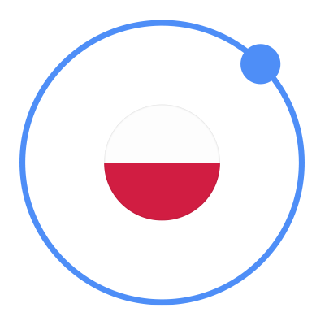
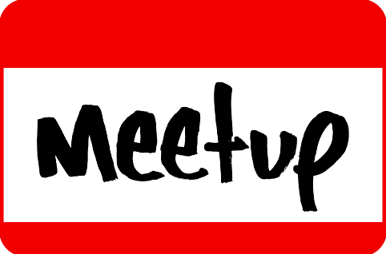

ionicpoland
Społeczność ionic framework w Polsce
Poznaj
ionic framework
i sprawdź możliwości aplikacji hybrydowych
Stwórz niesamowite rozwiązania na urządzenia mobilne
Przyłącz się do nas!
Dołącz do groupy
i dziel się wiedzą
@ionicpoland
bądź na bieżąco
 Spotkajmy się
i porozmawiajmy!
 Dołącz do groupy
Dołącz do groupy
 @ionicpoland
@ionicpoland